應變能選擇與解題前置準備
開場
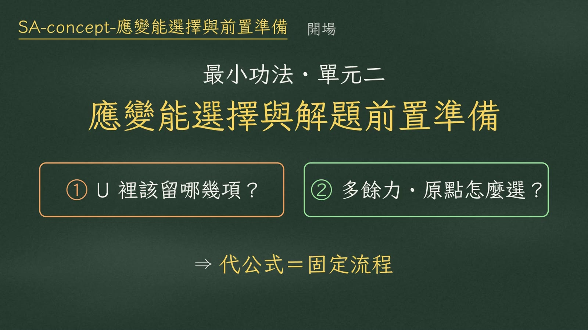
這支影片是最小功法單元二：解題前置準備。考場最常卡在兩個地方：
- 應變能公式裡到底要留哪幾項；
- 多餘力和座標原點怎麼選，算式才不會爆開。
這兩件事想清楚，後面代公式就是固定流程。
一、應變能該留哪幾項
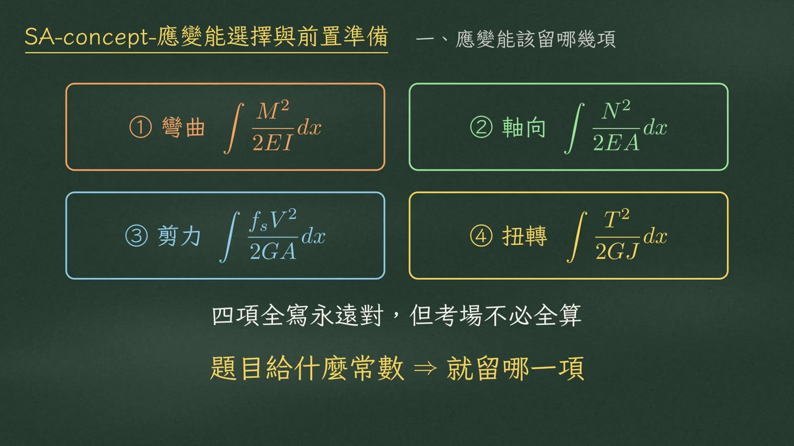
完整的應變能有四項：彎曲、軸向、剪力、扭轉，分母分別是 \(EI\)、\(EA\)、\(GA\) 和 \(GJ\)：
$$U=\int\frac{M^2}{2EI}dx+\int\frac{N^2}{2EA}dx+\int\frac{f_sV^2}{2GA}dx+\int\frac{T^2}{2GJ}dx$$四項全寫永遠是對的，但考場上不必全算。題目給了什麼常數，就是在暗示你留哪一項。
只給 \(EI\) → 只留彎曲
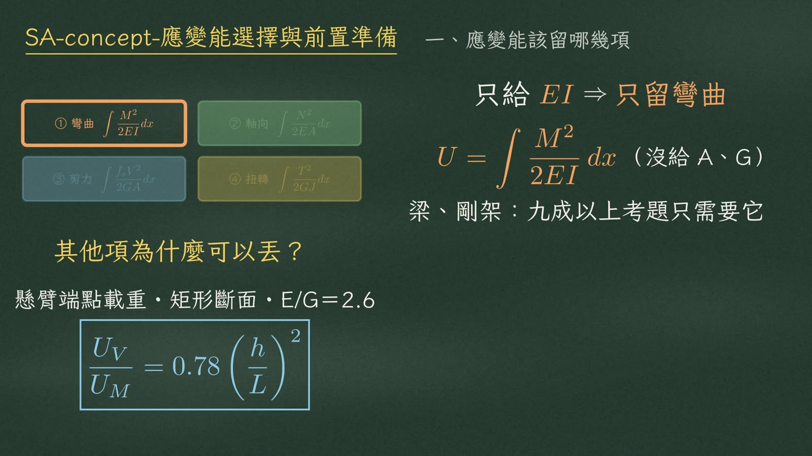
只給 \(EI\)、沒給 \(A\) 和 \(G\)，就只留彎曲項 \(\displaystyle U=\int\frac{M^2}{2EI}dx\)。梁和剛架，九成以上的考題只需要它。
其他項為什麼可以丟？看剪力能：懸臂梁端點載重、矩形斷面（\(E/G=2.6\)），剪力能和彎曲能的比值是
$$\frac{U_V}{U_M}=0.78\left(\frac{h}{L}\right)^2$$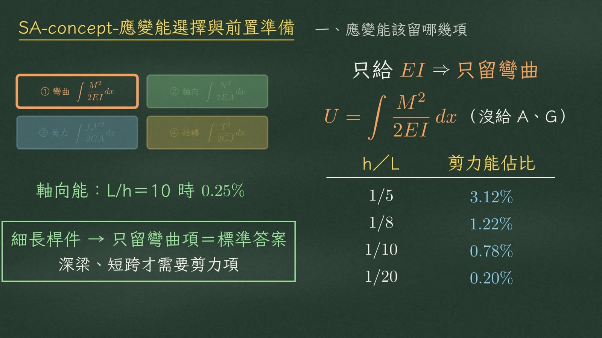
| \(h/L\) | 剪力能佔比 \(U_V/U_M\) |
|---|---|
| 1/5 | 3.12%（約百分之三） |
| 1/8 | 1.22% |
| 1/10 | 0.78% |
| 1/20 | 0.20% |
軸向能更小，長細比 \(L/h=10\) 的時候只有 0.25%。
只給 \(EA\) → 桁架，積分退化成求和
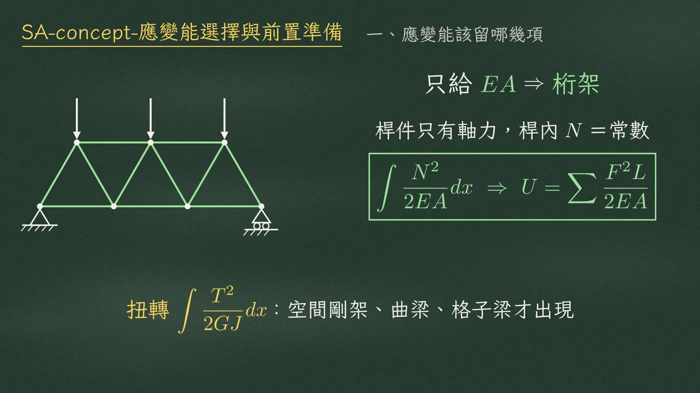
只給 \(EA\)，是桁架。桿件只有軸力，而且每根桿內軸力 \(N\) 是常數，積分直接退化成求和：
$$\int\frac{N^2}{2EA}dx\;\Rightarrow\;U=\sum\frac{F^2L}{2EA}$$至於扭轉項 \(\displaystyle\int\frac{T^2}{2GJ}dx\)，要到空間剛架、曲梁、格子梁才會出現。
\(EI\) 與 \(EA\) 同時給 → 混合結構
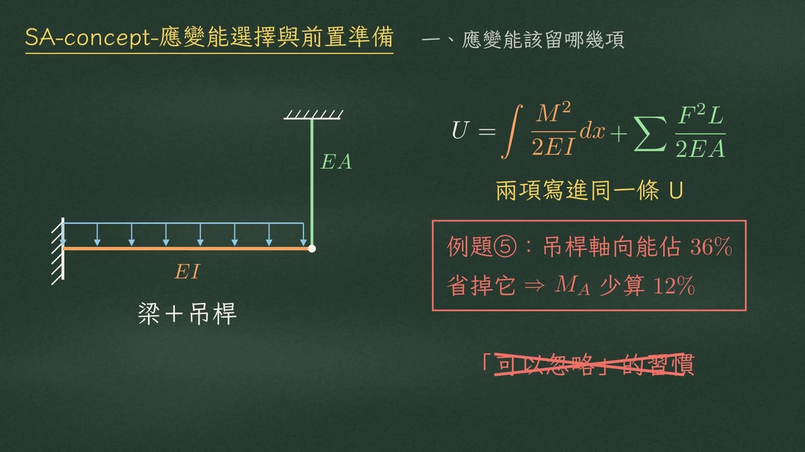
最危險的是 \(EI\) 和 \(EA\) 同時給，也就是梁加吊桿的混合結構，兩項必須寫進同一條 \(U\)：
$$U=\int\frac{M^2}{2EI}dx+\sum\frac{F^2L}{2EA}$$只給 \(EA\) ⇒ 只留軸向；
\(EI+EA\) 同時給 ⇒ 兩項一起寫進同一條 \(U\)。
二、多餘力怎麼選
用例題①：A 端固定、B 端滾支承，跨長 \(L=6\) m，均布載重 \(w=24\) kN/m。
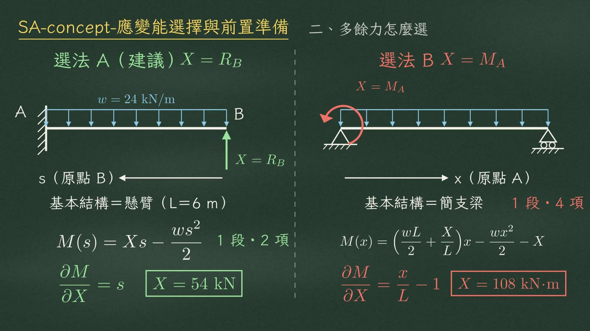
| 選法 A（建議）\(X=R_B\) | 選法 B \(X=M_A\) | |
|---|---|---|
| 釋放 | 拆掉 B 端滾支承 | 釋放固定端的彎矩 |
| 基本結構 | 懸臂梁 | 簡支梁 |
| 原點 | 自由端 B，\(s\) 從 B 往左量 | A，\(x\) 從 A 往右量 |
| 彎矩式 | \(M(s)=Xs-\dfrac{ws^2}{2}\) 1 段・2 項 | \(M(x)=\left(\dfrac{wL}{2}+\dfrac{X}{L}\right)x-\dfrac{wx^2}{2}-X\) 1 段・4 項 |
| \(\partial M/\partial X\) | \(s\)（乾淨好積） | \(\dfrac{x}{L}-1\)（帶分數，易錯） |
| 結果 | \(X=R_B=54\) kN | \(X=M_A=108\) kN·m |
選法 A：自由體上只看得到 \(X\) 和載重，彎矩式只有兩項。選法 B：A 端反力要先寫成 \(X\) 的函數，彎矩式變成四項。
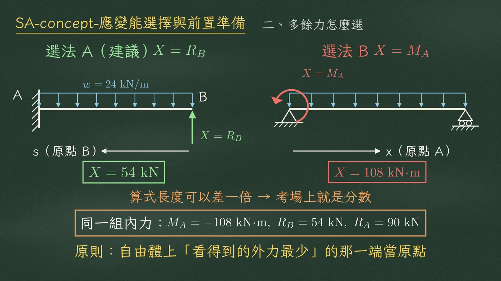
兩種選法，答案一定相同：
$$M_A=-108\ \text{kN}\cdot\text{m},\qquad R_B=54\ \text{kN},\qquad R_A=90\ \text{kN}$$但算式長度可以差一倍，考場上就是分數。
分段點：每遇到一個，就切一刀
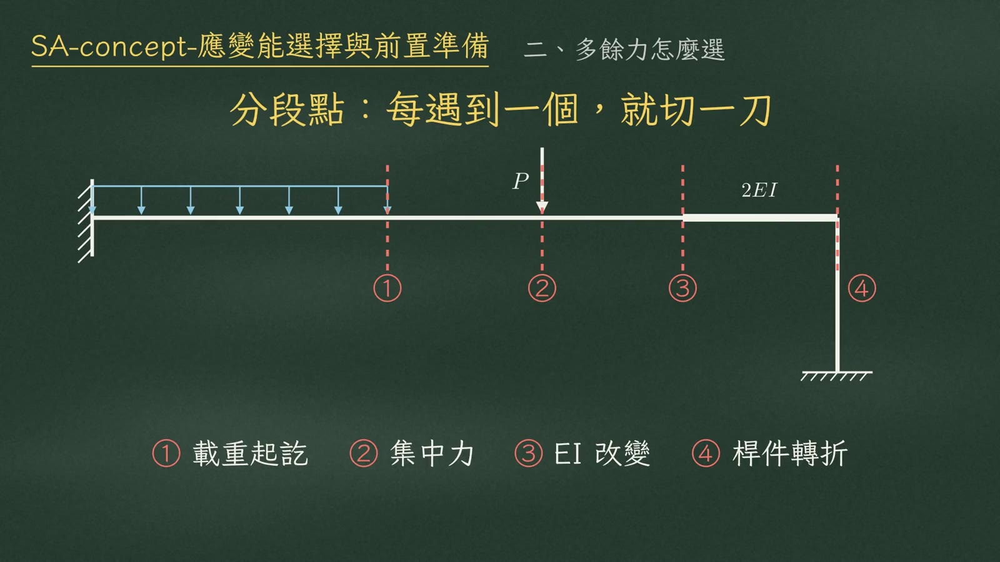
還要記住分段點：集中力作用點、分布載重起訖點、\(EI\) 改變處、桿件轉折點。每遇到一個，就切一刀，分段寫彎矩式。
三、例題①完整結果
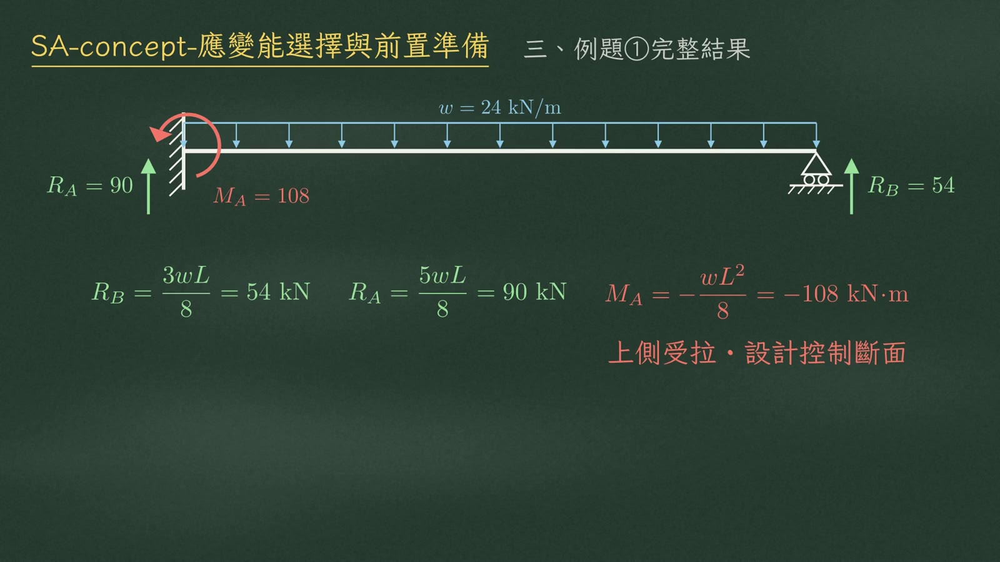
固定端彎矩 \(M_A\) 上側受拉，是設計控制斷面。
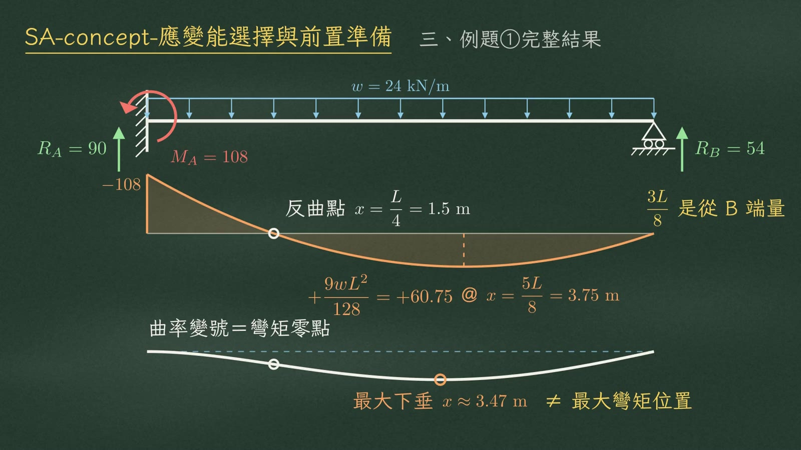
| 位置（距 A 端） | 內容 |
|---|---|
| \(x=0\) | \(M=-108\) kN·m（彎矩圖起點） |
| \(x=L/4=1.5\) m | 彎矩過零＝反曲點 |
| \(x=5L/8=3.75\) m | 剪力為零，最大正彎矩 \(+\dfrac{9wL^2}{128}=+60.75\) kN·m |
| \(x\approx3.47\) m | 最大下垂 |
變形形狀：固定端切線水平，靠 A 這一段上凸，過了反曲點變成下凹，曲率變號的地方就是彎矩零點。最大下垂在距 A 端約 3.47 m，和最大彎矩的位置並不相同。
考場避坑
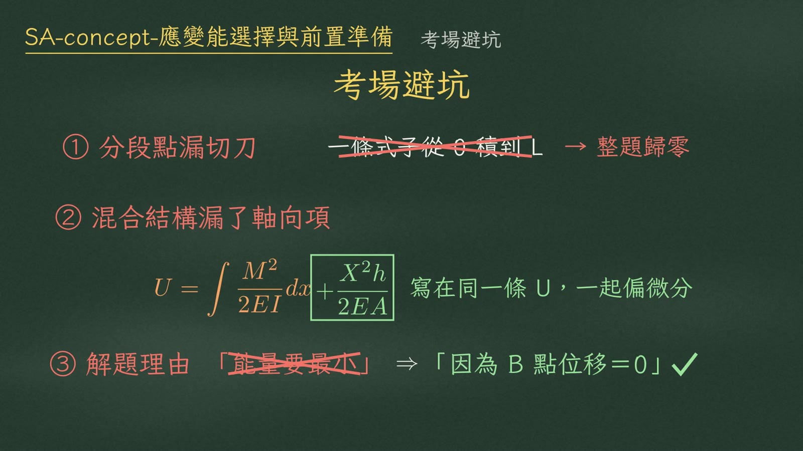
總結
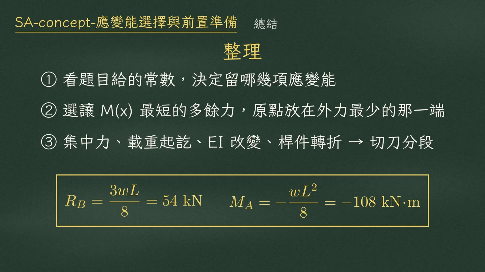
- 看題目給的常數，決定留哪幾項應變能。
- 選讓彎矩式最短的多餘力，原點放在外力最少的那一端。
- 集中力、載重起訖、\(EI\) 改變、桿件轉折 → 切刀分段。